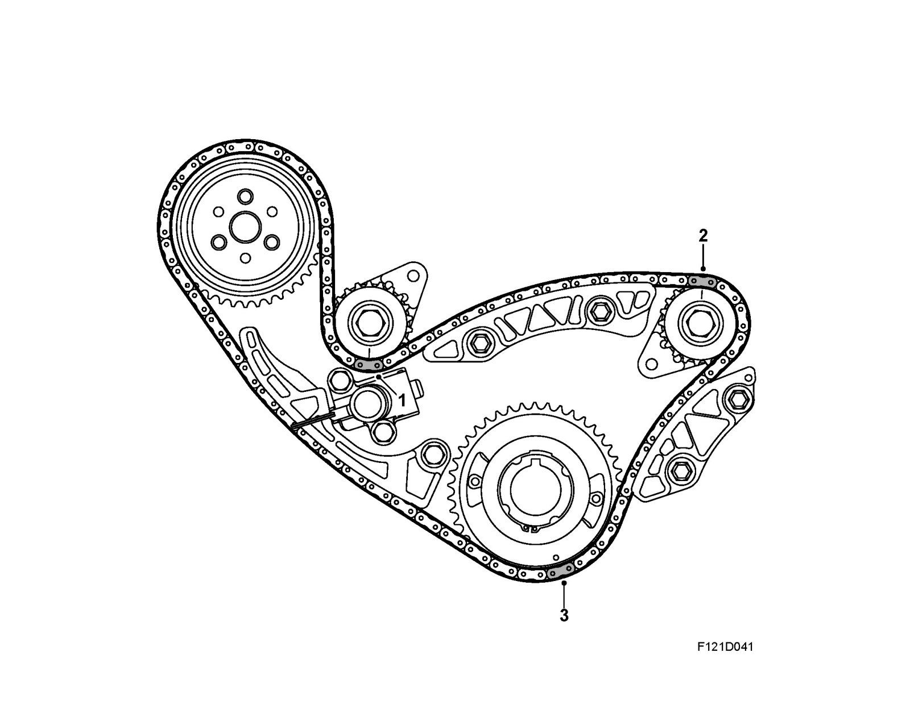

Balancer Shaft Transmission
Balancer shaft transmission
Balancer shaft chain traction
1. Chain link, chrome colored
2. Chain link, copper colored
3. Chain link, chrome colored
When setting the balancer shaft chain loop, the marks on the cogs must be aligned with the marks on the block. The chain is adjusted as shown in the diagram and when the pulley is zeroed with cylinder 1 in the top dead centre.